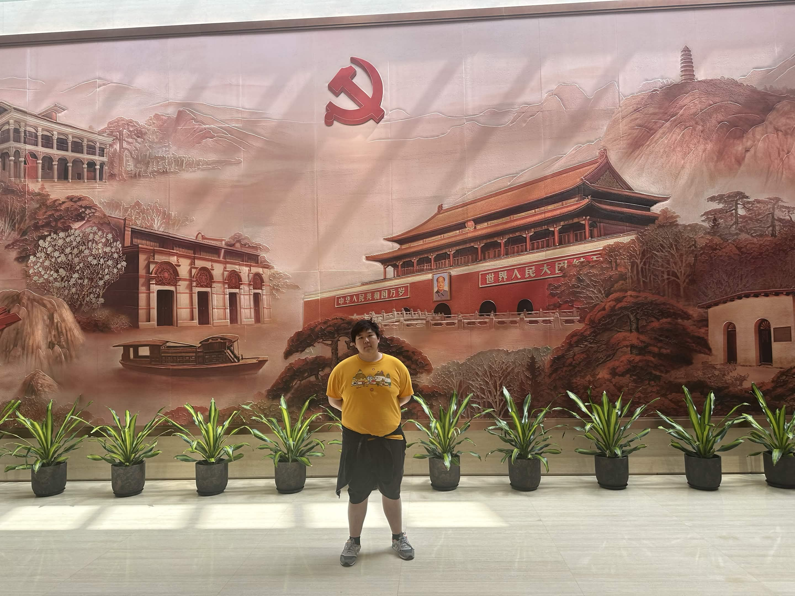

April 7th, 2026
I hated traveling as a kid. My mom used to take me to places most people would dream of going to. Italy, Germany, Prague, Iceland, etc. The places changed, but the routine was the same every time: Put a camera between you and anything that seems remotely interesting, eat some overpriced food, and maybe take a guided tour with a couple dozen other tourists. It would always culminate in some big fight where I would say that I wanted to go home and my mom would get angry at me for being ungrateful for the chance to travel.
This feeling stuck into middle and high school. I grew up in a rich suburb of Boston, so naturally I heard about my classmates' trips to resorts in Cancun or Hawaii or Cape Cod, or some cruise in the Caribbean. The idea always just seemed so pointless to me. If you’re gonna spend all this money just to sit around and eat nice food and do nothing, why bother traveling at all? At that point, it seemed like traveling for manufactured novelty, just to say you did it, and pretend that you are somehow more worldly for that. It reminded me of my travels as a kid, with my mom treating every historical landmark as something to snap a photo of and check off a list.
I always thought I was the odd one out, and that I just naturally hated traveling, and that was what I believed up until the summer of my sophomore year of college. My parents had been planning for a Chinese trip in my last year of high school, but that was derailed by COVID. Now that restrictions were finally being lifted, I had the chance to travel with my cousin across central China by high speed rail. Things were great, no major plan, just a string of random activities. I got a chance to talk to locals in my embarrassingly bad Chinese, went to a Chinese bathhouse for the very first time, and visited a lot of historical sites to satisfy my Chinese history hyperfixation. This was the first time that travel didn’t feel like a chore to me. To date it was probably the best trip I’ve ever experienced.

But it could have been better. I should have taken more initiative, talked to more people despite my insecurities about my Chinese ability. I had always felt that my self confidence when it came to my Chinese ability was holding me back - that people would be disappointed when they realized beyond my Chinese face was not the mind of someone they could relate to.
Still, it was an improvement, I realized I no longer disliked traveling, or perhaps that I never disliked it. But that pervasive feeling of inadequacy and fear of disappointment remained. I felt it in my second trip to China, where I would talk as little as possible to hide my limited vocabulary or a potential slip of my American accent. I felt it again in Japan, where I defaulted to using English instead of practicing the basic Japanese I already knew.
I was reminded of this fact these last two weeks. Today was the final episode of Tip 2 Tip 2, Michael Reeves and Ludwig Aghren's what turned-out-to-be 16 day trip from the southern tip of China to a small town near the Mongolian Border. Starting on Hailing Island in Guangdong, and ending in the city of Erenhot in Inner Mongolia, the trip took them across 8 different Chinese provinces in a little over 4,000 kilometers.
The only rules were: No Phone, No Maps, No Translators, and No Useful Apps. Ludwig and Michael probably knew a comically insufficient 100 words combined in Mandarin. The challenge being to travel the whole swath of a country at the mercy of directions given to you by locals that you can barely understand.
The feeling of embarrassment I felt when I saw the daily travel videos, with people slowly realizing that the two 白色外国人 in front of them couldn’t speak or understand basic Chinese, or the duo absolutely butchering the pronunciation for ‘hotel’ or ‘restaurant’ properly quickly faded as the episodes progressed. They broke traffic laws, accidentally told someone to shut up, and even crashed a funeral thinking it was a restaurant. The remarkable thing was that people didn’t care, they tried their best to help even after it was clear the two had no idea what they were saying, and despite it all, the duo made it to Erenhot, with half a dozen new friends in their WeChat.
To be honest, I was jealous. Jealous that two foreigners with significantly less Chinese ability than I had, were dauntless enough to talk to people, and I was still somehow too afraid, too wrapped up in my own pride to even try.
Besides their video updates being probably my daily highlight for the entire duration of the trip, I view Tip 2 Tip to be my idealized version of a vacation; off the beaten path, naturally stochastic, and a clear goal. It’s so raw, visceral, and at times incredibly uncomfortable, but undoubtedly one of the most genuine and worthwhile experiences you can have while traveling to another country; a far cry from the experiences I had as a kid.
I feel that my annoyance with the way my family did travel, or the kinds of places my classmates would go to was ultimately because it felt too easy, and too manufactured. Even now, ever since I started a full time job, it’s tempting to take the known path; work hard in your job, save money, and have a sizable nest egg at 30 or 40, with a comfortable retirement, but with a life I fear might be utterly devoid of nuance. If I end up with the same amount of hobbies and interests as I have now 10 years from now, I will consider it a massive failure. You want that depth, that joie de vivre that keeps life interesting, but to do that, you need to take action. The best things in life are free, but only if you take them.
I hope that I can follow their example, to be able to take risks and go outside my comfort zone, make people confused with my poor language skills, feel uncomfortable, or ‘cringe’, or embarrassed, and have more intentional and purposeful travels in the future.
If anyone reading this is down for Tip 2 Tip Vietnam, Korea, or Italy, hit me up